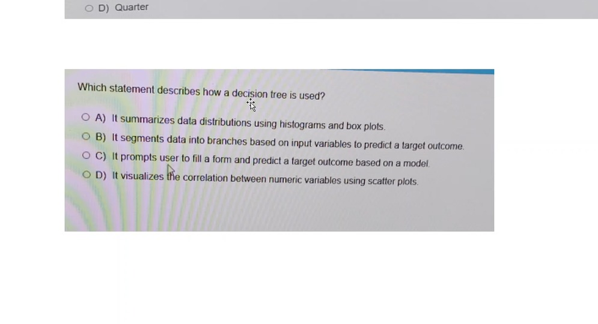

🌳 Decision Tree Quiz ▶
🌳 Decision Tree
Q1: Which statement describes how a decision tree is used?

✅ Segments data into branches to predict — The EXAM question! "Creates decision rules to predict the response variable."
❌ Histograms: Descriptive stats.
❌ Form: Tree learns from data.
❌ Scatter: Correlation analysis.
❌ Histograms: Descriptive stats.
❌ Form: Tree learns from data.
❌ Scatter: Correlation analysis.
Q2: What two roles are MANDATORY for a decision tree?
✅ Response + Predictors — Response = what to predict. Predictors = explaining variables.
Q3: Why are decision trees "white box" models?
✅ Transparent decision-making — "Structure is easily visualized, decision-making is transparent and understandable."
Q4: Which license for advanced decision tree features?
✅ SAS Visual Statistics — Advanced features: predictor importance, assessment plots, interactive mode.
Q5 🔥: What can you do in Interactive Mode on a decision tree?
✅ Prune, edit splits, train — Right-click to enter. Cut nodes (prune), change split rule, or grow tree.
Q6: What does the Icicle Plot show?
✅ Alternative view of the tree — Selecting a node in one view highlights it in the other.